Cube View Concepts
As we have learned, OneStream is full of different tools and techniques that are used to create an engaging User Experience. We have talked about reporting artifacts like Cube Views, Dashboards, Report Books, Extensible Documents, and Excel, and discussed how the OneStream UI itself can be tinkered with to create something that captures what Users need to do and when. Laying out your options and getting the hang of configuring each of them is how you can begin to answer any requirement that comes your way. So how do we get started?
This is the part of the book where we begin to dive into each of the artifacts we have discussed. We are going to pull them apart, stretch their boundaries, and get you discovering the art of the possible with each of them. So, get ready because Cube Views are up first!
Cube View Concepts
Cube Views
Why start with Cube Views? Well, that question applies not only to this book but also to most people’s careers in the software. If you are reading this book, you are probably looking to do some sort of maintenance, implementation, or design within OneStream Software, and Cube Views are commonly where most people start when they are ready to cut their teeth. This is usually because projects have a lot of Cube Views, and it is a great way for a new person to start plugging away and building.
Now I don’t want to scare you, but Cube Views have A LOT of properties. Don’t worry; this is a good thing! Each of these properties can be mixed and matched to get your Report or Form looking exactly how you want it. I can’t help but think of the movie Shrek, a classic film for all ages. If you really want to get serious about OneStream… you should watch it. Although I digress (and am half-joking), there is a scene where Shrek is telling Donkey that ogres have layers as he peels back an onion. Cube Views are just like that! They have layer upon layer for you to explore. And these layers are what make Cube Views multifaceted. They can be stretched into their own beautiful Reports, configured to collect data as Forms, added to Dashboards as visual Components for feeding data, brought into Excel as a live connection, threaded together to make a polished Report Book, or added to Extensible Documents to provide a live grid from Microsoft tools into OneStream!
So, invest in your Cube View knowledge. Spend a little time, dig in there, explore as many properties as you can handle. I once had a Consultant ask me to tour every single property in a Cube View. No stone was left unturned, and it took about two hours. But by the end, we both learned a lot and started to really pop with ideas on how we were about to handle our reporting requirements. Now, I will go through every single property in a Cube View. Give me one moment to dramatically clear my throat and crack my knuckles for the typing frenzy that is about to begin…
Let’s kick off our ode to Cube Views by discussing how Cube Views can be used: standalone Reports, data entry Forms, a starting point for Dashboards, within Report Books, within the Excel Add-in/Spreadsheet Tool, and within Extensible Documents. In this chapter, we will look at each of these pieces and discuss them at a high level. In the following chapters, we will look at how best to set up the design of our Cube Views.
Remember – when we write Reports – that we want to think about our audience and the purpose. So, let’s go through how Cube Views can commonly be used, and examine the common audiences and purposes of each of these items. Along the way, I will give you some advice and setup instructions. One thing you will start to see early on is that Cube Views will automatically have three different outputs we have to consider: Excel, PDF, and the Data Explorer Grid. Don’t feel overwhelmed! Consider this a good thing, as this will reduce the overall reporting maintenance going forward. We will dive into this more in the formatting chapter, but I want to lay out this concept so we start thinking about how versatile Cube Views are as we step through our common use cases. As we discuss each one, think, “How will be User likely interact with this?”
Cube View Concepts › Cube Views
Cube Views as Reports
The most obvious way to use a Cube View is as a nicely formatted Report. Usually, OneStream customers require beautifully printed Reports for a few different reasons. In Chapter 3, we explained that these Reports are likely your Financial or Managerial Reports, but there could be many more use cases.
Let’s isolate that first use case: Financial Reports. These are commonly added to reporting packages that are meant to communicate the health of the company. This means that our common User may be our End-Users, Executives, or even external Users. Then come Managerial Reports; they are obviously for our management team (it’s in the name!), and they usually pull items that allow the managerial teams to make important business decisions. They are also nicely formatted, easy-to-digest Reports that typically pull high-level data and various KPIs or ratios.
It may sound like we basically just listed all our potential Users, but they all have one thing in common – they need to see their information quickly, concisely, and simply. This will not take a lot of effort because Cube Views are naturally easy to follow from a User’s perspective. Really, the only mistake you can make is writing an overcomplicated, slow-running Cube View.
We have talked about our User when building Cube Views, but what about the person left maintaining the Reports after they have been built? Financial Statement Reports require a consistent and professional design that is repeatable and reusable to increase the longevity of any Cube View Reports. Businesses will continue to change – adding new people, branches, departments, you name it – so you want to make a Cube View Report as flexible as the business it represents!
Here are some great tips to follow when designing your Report for maintenance and flexibility:
Utilize the Application Properties Standard Reports tab as much as possible.
Set all common formatting as parameters.
Aim for consistency across Reports.
If you use Cube View Extender Rules, ensure your code is commented.
Make your Reports dynamic by prompting for Dimensions. This can often reduce the number of Reports you think you need.
Utilize row and column sharing where possible.
Utilize Member Expansions as much as possible. Resist the urge to pick individual Member names.
Explore creating dynamic Calculations in UD8 for common expressions, as opposed to rewriting the same formulas within your Cube Views.
In the upcoming chapters, we are going to explore how to create performant, legible, formatted, flexible Cube Views. We will establish how to build a simple Cube View and slowly start to incorporate more and more properties to allow it to take shape as a polished Report. Because of that, I will not provide you with too much configuration when it comes to Cube Views as Reports – because you are about to read a lot about that! – but I will take the time across the rest of this chapter to explain the configuration of adding Cube Views to Report Books, Extensible Documents, Dashboards, Forms, and Excel.
Cube View Concepts › Cube Views
Cube Views as Report Books
Often, our polished Cube Views do not end their journeys as standalone Reports. Our Financial and Managerial Reports will typically be assembled into Report Books. This is where you are taking the most neatly formatted and legible Reports and tying them all together into a package for internal and external stakeholders to view.
We don’t have a dedicated chapter for building Report Books in this book. However, it’s worth taking some time to offer you a high-level view of creating Report Books, if you have never used them before.
Cube View Concepts › Cube Views › Cube Views as Report Books
Creating Report Books
So how do Cube Views become Report Books? If you have never been exposed to Report Books in OneStream, it might be daunting at first, but it is one of the easiest things you will ever need to build. You already put a lot of effort into creating your Cube View Reports; now we just sit back and start the assembly process.
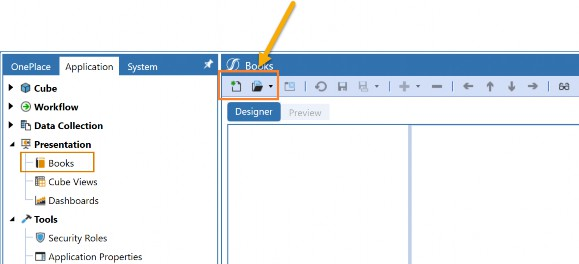
Figure 5.1
Let’s look at the Books page within the Application tab to see where we start our assembly (Figure 5.1). Don’t adjust your glasses or squint your eyes; that is what the page looks like at first. You have just entered the Report Designer and we have to bring it to life! Let’s start by looking at the first two icons on the Books pane (Figure 5.1), where we create a new Book (left) or open an existing one (right).
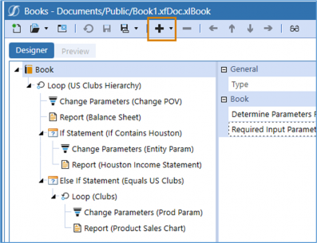
Figure 5.2
Figure 5.2 shows how the page looks when viewing an existing Report Book. Here, we see two Cube View Reports have been added to the Report Book: (Balance Sheet) and Report (Houston Income Statement), amongst a few other things. How did we add all these items to this Book? This was all done by clicking the + icon in the toolbar and choosing the item we wanted to add to our Report Book. You can choose to add a Report, file, Excel export item, Loop, If/Else If/Else statements, or Items to Change Parameters.
You may have guessed it, but our Cube View will be added to a Report through that + icon. We can see in Figure 5.3 that our Cube View is added by choosing the Report Type of Cube View and referencing an existing Cube View in the application.
But what if we need a Report that pulls data that is not stored in my Cube? Perhaps we need to provide information on Workflow Statuses or Intercompany mismatches. Maybe we incorporated MarketPlace solutions or Analytic Blend in our application design, and this data does not reside in the Cube and, therefore, cannot be queried by a Cube View. In these cases, you need a Dashboard Report to pull in this information and, as we can see from Figure 5.3, these are also options when adding a Report to a Report Book.
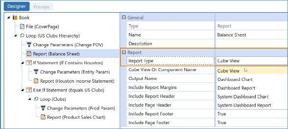
Figure 5.3
See how easy that was! Now for something fun. Let’s say we need a cover page that pulls in real-time financial information, charts, and tables. This cover page is usually created as an Extensible Document and can be added to your Book as a file shown in Figure 5.4. We will discuss Extensible Documents a bit later in this chapter.
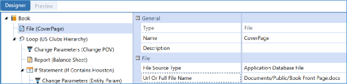
Figure 5.4
Great, so we know how to add content to the Report Book, but let’s take things a step further and apply some logic to the Report Book. You can see that there are items called Loops, If statements, Else If statements, Else statements, and Change Parameters.
A Loop is a sequence of instructions that will continually run a process – multiple times – based on defined criteria. In one example, you may require a Report Book that pulls the Income Statement and Balance Sheet for all the Entities under a specific Entity Parent, or all the months of a year, or whatever. Any variability like this will require a Loop, and Figure 5.5 shows one example of a Loop and how it is configured. Here we are using a Loop to run multiple versions of the Report Balance Sheet. Each version of this Report will represent an Entity under the US Clubs Hierarchy.
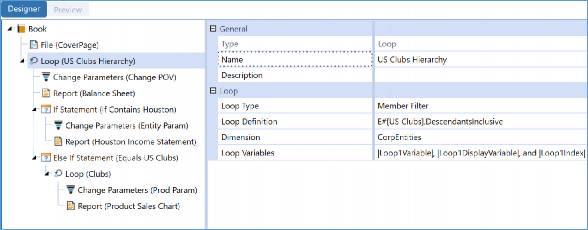
Figure 5.5
Figure 5.6 shows how this Loop can be created. In this image, the Loop will pull all the descendants under the US Clubs Member, meaning that we just expanded the number of Reports we are pulling quickly and dynamically. If you don’t know what those Loop variables are at the bottom, this leads us to our next item: Items to Change Parameters. That is the first item under the Loop. This will allow you to turn off any parameters, variables, or adjust the Workflow or Cube POV.
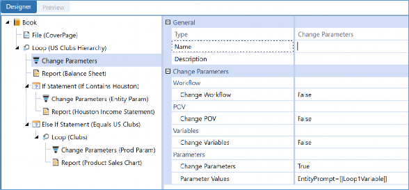
Figure 5.6
Figure 5.6 shows how we are using that Change Parameter to unwind an existing parameter found in the subsequent Report. Perhaps in that Balance Sheet Cube View Report, we were prompting for the Entity using a parameter called EntityPrompt. This Item to Change Parameter will tell the Report Book to ignore the parameter and not prompt the User for an Entity, but instead listen to whatever information is in the Loop.
Maybe we need a bit more logic applied to the Loop, though. This can be done through If, Else If, and If statements.
Alright, let’s continue down our Report Book hierarchy and look at how these are set up, in Figure 5.7.
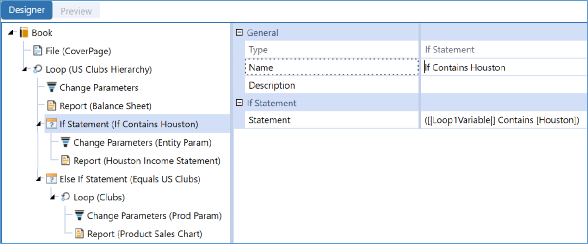
Figure 5.7
Here the If Statement is meant to add flexibility to the Loop we just explained. This syntax is saying that ‘If’ the Loop passes over an Entity Name that contains the text Houston, then pull an additional Cube View Report (Houston Income Statement). With Loops, Change Parameters, and If/Else If/Else statements, we can take a few ordinary Cube Views, incorporate files or Dashboard Reports, and flex them to generate a multifaceted Report Book.
Believe it or not, that is all it takes to get a Report Book up and running. Before we conclude, let’s look at the three different types of Report Books we can create:
PDF Book
Zip Book
Excel Book
The Report Book we just broke down was a PDF Book, and this is configured when it comes time to save the Report Book and give it a file name. This is all done in the suffix of the file name.
Really. So, for a PDF, key in the suffix .xfDoc.PDFBook; for Zip type .xfDoc.ZipBook; and for Excel, choose .xfDoc.XLbook. You DO need the .xfDoc, or else your Report Book won’t work. You can see what I am talking about in Figure 5.8.
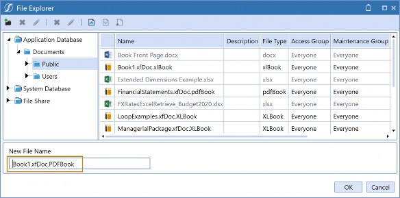
Figure 5.8
I do have one small caveat to point out. Each Report Book type can be created using the same steps outlined in this section. However, if you wish to create an Excel Book, there is one adjustment you need to make in the build. We must use Excel Export Items instead of Reports when adding content to the Book. These are created specifically for Excel Report Books, and they will pull the Excel-exported version of a Cube View. We can see the design of an Excel Report Book in Figure 5.9, so when we are formatting our Cube View Reports, we might not just want to think about how they look as a PDF but as an Excel file too. We will learn in Chapter 7 that both can be intricately formatted separately.
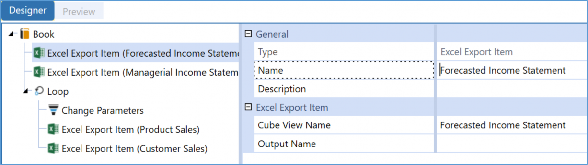
Figure 5.9
Once your Report Books are nicely assembled, you can keep them in the File Explorer, incorporate them into Dashboards, or run them through the Parcel Service. Parcel Service is a truly handy MarketPlace solution that emails Report Books (or other Extensible Documents), and where you don’t even need a OneStream License to receive the reporting package. This is a great option if you are running very large Report Books that might take a little time to render. Instead of waiting, simply use the Parcel Service to email yourself. These can also be automated to send to an internal or external distribution list through the Task Scheduler.
Cube View Concepts › Cube Views
Extensible Documents
You may not know this, but Report Books are a version of Extensible Documents. And that’s the end of the section… thank you, tip your waiter on the way out. Just kidding. Extensible Documents, as we have said in prior chapters, are our way to incorporate a live connection of
OneStream data, Cube Views, Dashboard Reports, or Excel Add-in Reports into our various Microsoft tools.
In this section, we are going to go through how to add a Cube View into an Extensible Document. You may do this if you have a cover letter for a Report Book or a PowerPoint presentation that refers to a nicely formatted data grid. Perhaps we need this grid to be dynamic, based on selection (parameters), and update as data changes. This is an excellent way to use multiple reporting tools within OneStream to create an all-encompassing User Experience.
Cube View Concepts › Cube Views › Extensible Documents
Adding Cube Views to Extensible Documents
So how do Cube Views find their way into Extensible Documents? It’s an interesting trick that you can use, but Extensible Documents can take an ordinary picture and transform it into a Cube View, or a Dashboard Chart, or a Dashboard Report, or an Excel file.
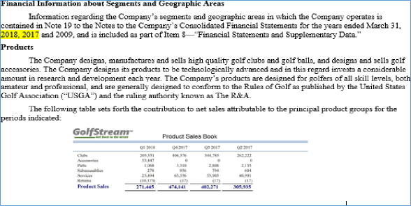
Figure 5.10
Figure 5.10 is not showing a mere picture of a Cube View. This is an Extensible Document pulling a live Cube View from a OneStream application. If this Cube View is adjusted in the application, it will be reflected in this image once the Extensible Document is re-run. If the data changes, same thing. And if any parameters are being referenced, you will be prompted to make any necessary selections.
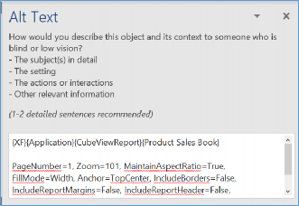
Figure 5.11
So how is this magic configured? It is all done through the Alternate Text Properties within the Microsoft artifact you are creating. Figure 5.11 shows an example of how this looks in Microsoft Word.
The first line of this syntax says to pull an existing Cube View Report called Product Sales Book. The rest of the syntax is for any necessary formatting you may have. For example, the Page Number could be for multi-paged Reports, and you can also trim margins off the Report as well.
They can take a little tinkering to get things working, but it’s a labor of love.
Don’t worry, you don’t have to type all of that in! You can use the Object Lookup icon back in the application to search for the syntax under the Extensible Document settings. The below image shows the required syntax for referencing a Cube View in an Extensible Document. The first line is what pulls in the Cube View. The second line is for any formatting. You don’t need the second line if you are not applying any new formatting.
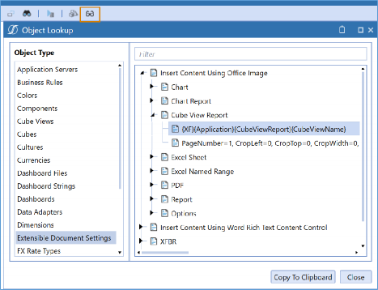
Figure 5.12
That’s it. Simply copy, paste, and update.
Once again, don’t forget to ensure that the Extensible Document is saved with the suffix .xfdoc in the file name and run through the File Explorer in OneStream. I have seen many people scratching their heads because they forgot this simple but crucial step.
| Tip: I like to pop a parameter in the Extensible Document, so when it is run through the File Explorer I will know if I have forgotten the suffix (or misspelled it) if I do not see a prompt. If you see the prompt, but the Cube View is not working, then you know you have something incorrect in your alternate text property. |
Cube View Concepts › Cube Views
Cube Views for Data Entry
After Reports, the second most common thing you will create with Cube Views is a mechanism for data entry.
When designing data entry within OneStream, you can choose if you want to collect data through Forms or Journals. Most of the time, we see people picking Forms and these can be built through
Spreadsheets, Dashboards, or Cube Views. The interesting thing is that no matter which option you choose, I can almost guarantee that you will need to create a Cube View to get started.
In this section, we will focus on enabling an existing Cube View for data entry. We will not cover how to build a Form template, but we will give you a little advice on how to ensure your Cube View is dynamic, based on the Workflow. This is a MUST because our Users will need to interact with the Cube View through the Workflow to submit data, and we always want to prioritize creating dynamic Cube Views.
Cube View Concepts › Cube Views › Cube Views for Data Entry
Enabling Cube Views for Data Entry
If you know how to make a Cube View as a Report, you can quickly pivot this into a Cube View for data entry. When a Cube View is not available for data entry, the cells will not be editable. In Figure 5.13, you can see that the white cells are editable, and the green cells are not editable.
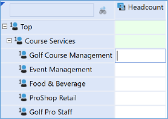
Figure 5.13
Moving slightly off-topic, you may already know that we can change the background color of your Cube View cells, but did you know the background color of the editable cells can be edited separately? This is done by changing the WriteableBackgroundColor, as depicted in Figure 5.14.
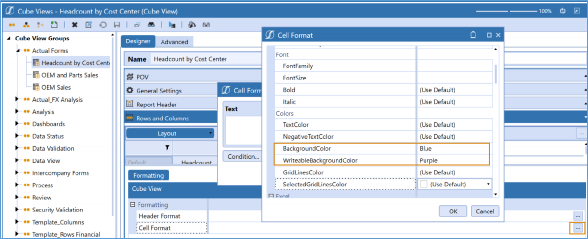
Figure 5.14
And now, if you turn your attention to Figure 5.15, we can see that our resulting Cube View looks a bit more… colorful. Okay, so you probably wouldn’t see something that looks this wild in a live application (or maybe you will, I won’t judge!), but it illustrates that you are not just stuck with green and white.
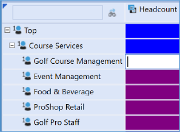
Figure 5.15
Let’s get back on topic. How do we get to the point of making our Cube View editable for data entry? There are three things we need to adjust:
Set Cube View Can Modify Data.
Choose the appropriate Origin Member.
Ensure the Cube View is pulling all Base Members.
The first step is the easiest. All you need do is set the Can Modify Data property to True on the Common properties under the General Settings of the Cube View. You can see how to do this in Figure 5.16.
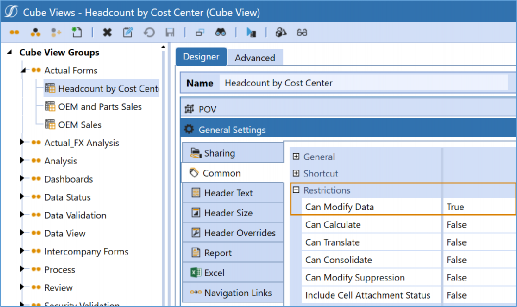
Figure 5.16
Step two is all about the Origin Dimension. The Origin Dimension is something unique to OneStream. This Dimension cannot be edited from anywhere in the application, meaning the Members you see are the Members you get. The purpose of this Dimension is to track how the data is brought into OneStream. The three ways that data can be brought into OneStream are by importing (requires data sources and Transformation Rules), Forms, and Journals. Let’s look at the Origin Dimension shown in Figure 5.17.
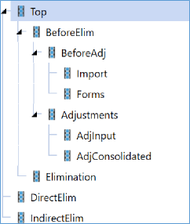
Figure 5.17
When configuring our Cube View for data entry, we want to ensure we are writing to either Forms or the BeforeAdj Member. Either of these options will open your cells up to receive data.
However, I may have just startled you if you jumped ahead to step 3 because BeforeAdj is a Parent Member! Well, this is an exception. The BeforeAdj Member aggregates the Import and Forms Member and is, in fact, available for data entry. This is a great option if you are loading some data and then potentially viewing and adjusting this data through Forms. This way, you can see what you are changing. One use case could be in a Planning situation. We often see data seeded into a Scenario Member and then Users perform data entry on top of this. This is a great way to see what came in versus what was adjusted using the Origin Dimension.
The below Cube View (Figure 5.18) shows you how this can work. We can see in the Mach5 line that 2,927,034.61 was imported. If you wanted to change that number to 3,000,000.61, you could key in the difference to the Forms Member, and OneStream will aggregate the two values into the BeforeAdj Member; or simply key in the final number into BeforeAdj and OneStream will calculate the difference and write it to Forms for you.
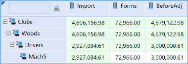
Figure 5.18
The third and final step for enabling your Cube Views for Data Entry is to ensure that your Cube View is pulling all Base Members. We have learned that our exception to this rule is the BeforeAdj Origin Member. A great tip to check this quickly is to right-click on an individual cell and drill down. This can be done within the Data Explorer Grid of the Cube View and is your chance to quickly see the Members behind any cell. If any of the Members are green, they are a Parent Member, and you will want to make the necessary adjustments in your rows, columns, or Cube View POV.
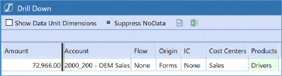
Figure 5.19
So, let’s recap. There are three things you need to check to ensure your Cube View is available for Data Entry:
Set Cube View Can Modify Data.
Choose the appropriate Origin Member.
Ensure the Cube View is pulling all Base Dimensions.
But what if your cells are still editable, and you are positive you have checked all these things? You could be facing a few other problems:
Check to ensure you are not violating any constraints set in the Dimension Library.
The Workflow has been locked or completed. Data Entry Forms coincide with the Workflow. If the Workflow Profile has been locked or completed at this point, your cells will be barred from entry. This may not be the case if you are not assigning Entities to your Workflow Profiles.
Conditional Input Rules can prevent entry as well. This would be done through a Finance Business Rule on the Business Rules page.
Cube View Concepts › Cube Views › Cube Views for Data Entry
Workflow and Data Entry
Simply enabling your Cube View for Data Entry is not enough to call it a Form! Our Cube View needs to be added to a Form Template, and then it can be added to the Workflow. To get started, we will want to ensure that our Cube View is dynamic, based on the Workflow POV. This is comprised of our Workflow Time, Workflow Scenario, and Workflow Profile.
Time and Scenario are easy to tackle, and we can begin here.
Typically, I will start by pulling the Member WF into the Scenario and Time section of the Cube View POV, rows, or columns. The variable WF comes with your application, so you don’t need to add this to your Dimension Library; it is already there for you, I promise! If we reference this in our Scenario and Time, when this Cube View is run, it will not prompt me but update these Members in my Workflow POV. The setup of this can be seen in Figure 5.20.
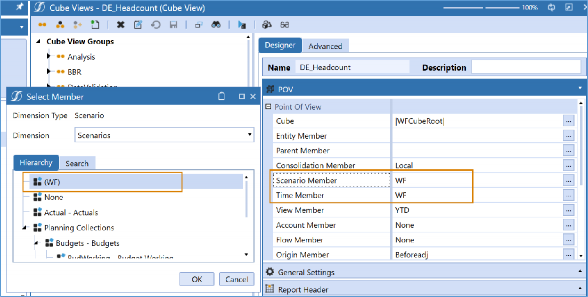
Figure 5.20
For the Scenario Dimension, this will likely be your best option, but for Time we often need a bit more flexibility, especially if our Form is being used for Planning purposes. Commonly, our Budget Scenario Members are configured in the Dimension Library with a Yearly Workflow Tracking Frequency. This means that WF for these Scenario Members would be pulling in the year, not a specific month. Even if this didn’t happen – usually when entering Budget or Forecast data – we typically want to see the months in the year displayed in the rows or the columns. Figure
5.21 illustrates what you would likely want to see instead.
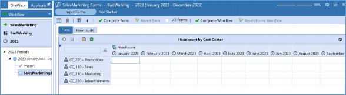
Figure 5.21
How did we get this to work? Well, there are many ways you could do this, but my trick is to construct a Time column that looks like Figure 5.22, below. That |WFYear| is what we call a substitution variable. Substitution variables resolve at runtime into a variety of things and can be referenced throughout the application. The best part is that they come with every OneStream application and require no additional setup. Whenever you see the little eyeglasses icon, this means you can access the object lookup, where you can copy and paste these variables (amongst other things) wherever you need. Figure 5.23 shows substitution variables in the object lookup icon. We will cover these thoroughly in Chapter 8 of this book.
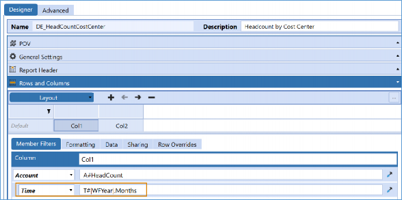
Figure 5.22
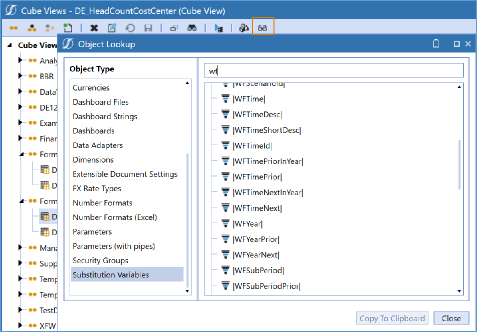
Figure 5.23
We now have our Workflow Scenario and Workflow Time accounted for, but what about the Workflow Profile? Also, why do we care about the Workflow Profile? That isn’t a Dimension! Typically, we see many Workflow hierarchy designs have Entities assigned to the individual Workflow Profiles. This means that these Workflow Profiles likely only load and enter data for a specific batch of Entities. There is one handy expansion that will help you to ensure your Entity Dimension properly reflects what is assigned to the Workflow Profile: E#Root.WFProfilesEntities. This expansion will pull all the Entities assigned to the Workflow Profile, and we can see the syntax in the Member Filter Builder in Figure 5.24.
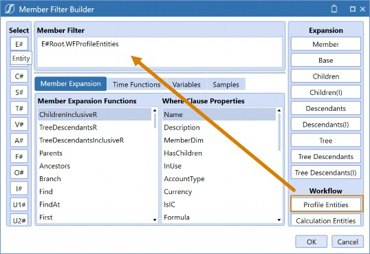
Figure 5.24
The other piece you will want to tie to your Workflow is the Cube. You may or may not know this, but your Workflow Profiles are very much tied to this, and behind every Workflow Profile is an assigned Cube. Setting this to be dynamic to the Workflow Profile is a great move when working with Data Entry Cube Views.
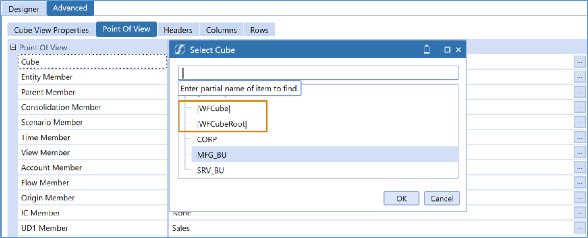
Figure 5.25
Figure 5.25 illustrates two potential options when dynamically referencing the Cube. You can choose the |WFCube| or the |WFCubeRoot| variable.
|WFCube| will pull whatever Cube is assigned to this specific Workflow Profile, while
|WFCubeRoot| will pull the Workflow associated with the Cube Root Profile. If I just lost you, under most circumstances both should work for you, but |WFCube| will typically be more flexible. Think through your situation to see what is required.There is a chance you may have another Dimension that you need to default off the Workflow in some shape or form. We may not have something out-of-the-box for this, but this is where you can utilize your Workflow text properties. These can be referenced using the |WFText1| through
|WFText4| substitution variables. And the nice thing is… these can vary by Scenario Type!
Cube View Concepts › Cube Views
Cube Views as Dashboards
In the last section, we talked about how Cube Views can be used to create Forms. We also mentioned that Dashboards and the Spreadsheet tool can be used for data entry as well. But did you know that a Cube View is required to make either of those things possible? In this section, we discuss how Cube Views can be added to Dashboards.
We are setting the stage with data entry in our minds, but there are a lot of reasons why Cube Views make their way into Dashboards. Typically, when it comes to data entry, we may be flexing the capability of our Forms by adding custom Calculations into the picture, or additional Dashboard Components.
Cube Views are a really simple way to bring data into our Dashboards, either as a Dashboard Component themselves or as a data adapter. I don’t want to get too far into the setup of a Dashboard here because we have more chapters on this coming later. If you are totally new to Dashboards, keep this information in your back pocket, and we will go into the full setup of Dashboards later.
Cube View Concepts › Cube Views › Cube Views as Dashboards
Cube View as Dashboard Components
I like to describe a Dashboard Component as the type of item that we visualize on the screen when we are running our Dashboards. These can be charts, logos, buttons, combo boxes, or (of course) Cube Views! Figure 5.26 continues where the prior section left off by showing a Cube View that is being incorporated into a data entry Dashboard. I feel like we could play a fun game here called “Can you spot the Cube View?” I will give you a hint; there are two…
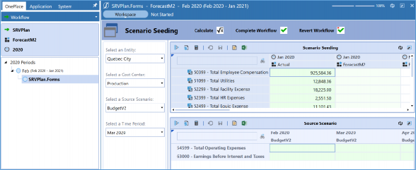
Figure 5.26
How did we sneak these two Cube Views into a Dashboard? Let’s venture to the Dashboards page and see how this is set up in Figure 5.27. This image highlights the setup of what is called a Cube View Dashboard Component. The setup can be as simple as creating the Dashboard Component, and then adding your Cube View to the Component through the property entitled Cube View. How easy is that?!
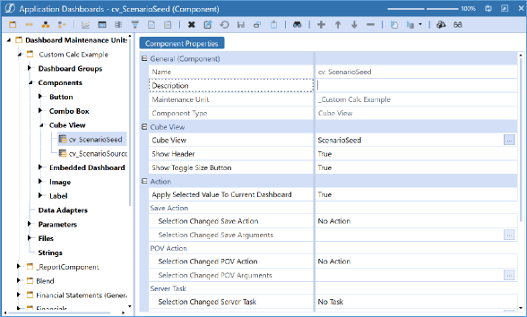
Figure 5.27
Cube View Concepts › Cube Views › Cube Views as Dashboards
Cube View as a Data Adapter
The other way that we see Cube Views added to Dashboards is as a data adapter. A data adapter is what feeds your various Dashboard Components with data. So, while Dashboard Components are the visual aspects to our Dashboards, data adapters are a bit more behind the scenes.
Before launching into that explanation, I should clarify that not all Dashboard Components require a data adapter. Typically, our more robust Components, such as BI Viewer, Charts, Table Views, Grid Views, etc., will require one, while our simpler Components such as buttons, labels, combo boxes, or File Viewer will not. But how do I know if I need a data adapter? If you see a little tab like the one in Figure 5.28 on your chosen Dashboard Component, then you need to add a data adapter.
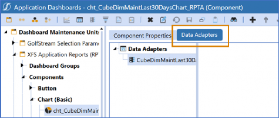
Figure 5.28
Where do Cube Views come into play? They can easily bring Cube data to our Dashboards. Simply choose Cube View MD or Cube View as the Command Type (this is a pull-down menu) and choose the Cube View you wish to reference. We can see the setup of the data adapter in Figure
5.29. Yes, I literally did name my Cube View as Cube View MD; I am not very creative. (I’ll explain the meaning of MD, below.)
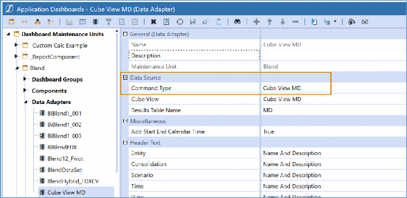
Figure 5.29
One of my favorite tips when building Dashboards is, “If you can get it into the data adapter, you can get it to look good on your Dashboard.” It makes something that can often be very complex feel bite-sized and manageable. The act of using a Cube View as a data adapter is no more complicated than me highlighting a grid in Excel and then clicking on the create chart icon. It allows me to tinker with my Cube View as opposed to messing with other properties on the Dashboards side.
Let’s look at an example.
I want to build a Dashboard that will show me a trend of 12 months of data for a chosen customer (let’s say, a hotel chain). If this data resides in the Cube, the first thing I would do is build a Cube View with this information. Here is an example of the Cube View I might build.
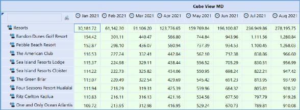
Figure 5.30
I don’t need to do any wild formatting since this Cube View will not be seen, but I may want to give it a name that indicates why I have created this Cube View. I may also want to ensure that the Cube View POV is locked down as much as possible and anything dynamic is using substitution variables or parameters.
Then I am ready to venture off to my Dashboards page and build the data adapter. I have two options:
Cube View MD
Cube View
You may have guessed it – since I called the Cube View Cube View MD – but that is the Data Adapter Type I chose. I am personally quite fond of the Cube View MD data adapters because they do a wonderful job of displaying the information simply and have some interesting properties that increase their range of motion. Figure 5.31 shows the results of a Cube View MD data adapter that was built using the Cube View shown in Figure 5.30.
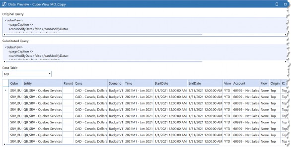
Figure 5.31
Look at that! How easy! This data adapter is pulling all my rows and displaying the Dimensions I am querying behind each row. The Figure cut off, but it will continue to show all my OneStream Dimensions and the Amounts. This is what puts the MD in Cube View MD (MD stands for Multi-Dimensional)! When bringing this information into a Dashboard, I can decide which of my Dimensions I would like to place where, making my Component configuration a breeze.
These data adapters also offer you some additional options. We can see the first batch of these in Figure 5.32.
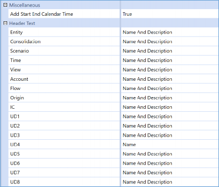
Figure 5.32
The Start End Calendar Time will generate two additional columns in your data adapter. This is very handy when working with BI Viewer or the Report Component (formerly known as Studio) to display additional options for Time. Give it a try if you are curious.
Figure 5.32 also highlights that you can choose to display the Name, Description, or both of each Dimension Type. This is nice when formatting your Dashboards.
The other neat thing about the Cube View MD data adapter is the ability to loop through additional Members, as shown in Figure 5.33.
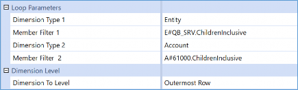
Figure 5.33
Yes, just like our Report Books, we can add Loops here as well. Through the Loop Parameters, we can override what is in the Cube View, and loop through a given Member Expansion. This is handy if we need to use the same Cube View for many purposes.
The above screenshot shows that my Cube View MD data adapter will also render data for my Children under the Entity QB_SRV (including that Member) and my Children under Account 61000 (including that Member).
The last thing I will point out is the final property: Dimension To Level. This one really is a game-changer for those of you who are familiar with table structures.
If we look at the options, you will notice we can choose the outermost row, column, or both in the pull-down menu. In our Cube View, I was only pulling UD4 into the rows, so I could just choose outermost, but if the Cube View had multiple Dimensions to expand, we might tinker with our options.
Let me show the results of enabling this option (hint: It’s the UD4_Level_0 and UD4_Level_1
columns that were added) in Figure 5.34.
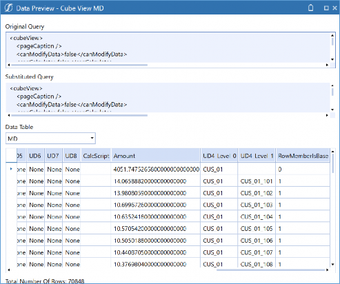
Figure 5.34
What this is doing is generating additional columns based on where the Members are in the hierarchy. So, my Parent is CUS_01 found in the UD4_Level_0 columns. Then all the Children are in UD4_Level_1. This will allow me to pull hierarchy Members based on my dimensionality in OneStream. This is huge because, in a table format, we typically cannot recreate the effect of a hierarchy; but with this property, you can use these additional fields to do just that if you are using Components such as BI Viewer or pivot grids.
We have covered Cube View MD data adapters, but what about Cube View data adapters? What is the difference? Configuration-wise, you still just reference a Cube View, but the output is a bit different, and we can see this in Figure 5.35.
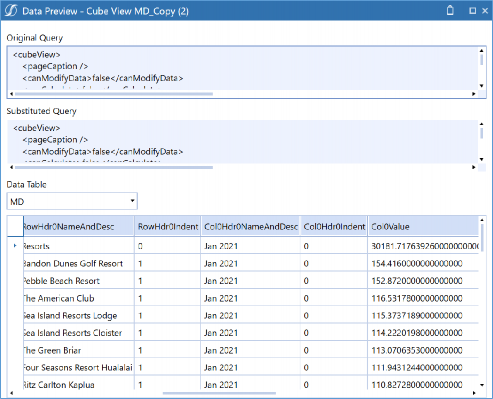
Figure 5.35
Can you see the difference? The fields across the columns are totally different! That is because they represent the items within the Cube View not the Dimensions.
This data adapter will work just fine, but I would recommend that if you are using Components such as BI Viewer, Report Component, pivot grids, and large data pivot grids, you may want to consider the Cube View MD Data Adapter. With that, you drop fields into the place you need them to be. This is much easier if your fields are Dimensions instead of Col0, RowHdr0Indent, or something like that.
Cube View Concepts › Cube Views
Cube Views in Excel
Our final stop in all the places where Cube Views can be incorporated is our trusty Excel Add-in. Or, if you prefer, the Spreadsheet tool. Within these tools, you have three common options that people utilize to pull or submit data: Retrieve Formulas (XFGet or XFSetCells), Cube View connections, and Quick Views. Cube connections are what we will discuss in this chapter.
Cube View Concepts › Cube Views › Cube Views in Excel
Cube View Connections
Creating a Cube View connection in Excel is much more powerful than simply exporting a Cube View. This provides a live connection into Excel and can be refreshed to ensure you are seeing the latest information, in case the data or the Cube View has changed.
Commonly, people will use Cube View connections for data entry. This is a great tool to use if you are going to make a Spreadsheet Form template or if you want to give Users the option to submit a Cube View Form in Excel (as opposed to through the application). Figure 5.36 shows the latter option, which is done by enabling the highlighted icon. You create your own file in the Excel Add-in or Spreadsheet function that uses a Cube View connection to reference the Cube View displayed on the Form template. This file is then added to the Form template.
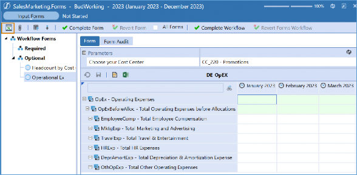
Figure 5.36
Whatever your use case is, Cube View connections are extremely simple to configure. Here, I will demonstrate this in the Spreadsheet tool by clicking the Cube Views icon at the top of the Spreadsheet. From this window, click the Add button to grab any Cube View in the application, as shown in Figure 5.37.
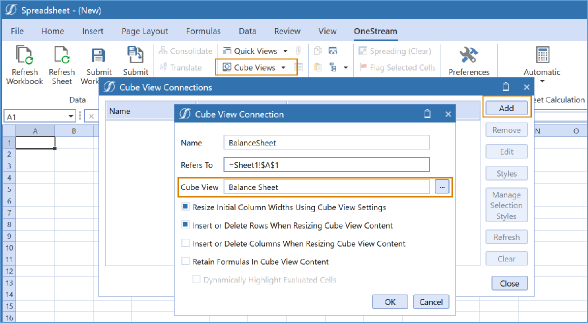
Figure 5.37
After that, you may be prompted for any parameters for the Cube View. Don’t worry; whatever you choose at this stage is not permanent. Your Cube View should display within the grid and can now be refreshed to pull the latest data; or you can submit data you have entered through the Cube View if you have it properly configured.
With the Cube View connection made, you can now save this file to your desktop or to the File Explorer icon. Your file can now be added to a Form template to give Users the option to submit data through Excel, or you can incorporate this into its own Spreadsheet Form template.
These aren’t the only reasons to use Cube View connections. Most commonly, they are used as an Excel reporting mechanism or perhaps to jumpstart an Excel Report that utilizes OneStream XFGetCell functions to retrieve data.
Cube View Concepts
Conclusion
This chapter was a bit of a doozy, but you made it through! We discussed how Cube Views can be used as Reports, Excel Add-in/Spreadsheet, data entry, Dashboards (as Components and data adapters), Extensible Documents, and Report Books. These are all our Reporting Tools in OneStream. See how these simple little grids can be so much more useful than you ever imagined?
This chapter is just the first one in our Cube View journey. Next up, we are going to dive even deeper into the details of building and designing Cube Views. After that, we will spend an entire chapter discussing how Cube Views can be formatted. This is where we will want to take into consideration the three ways that our Cube View can be exported: Excel, PDF, and Data Explorer Grid. Finally, we will spend a little time looking at some more advanced concepts with Cube Views and how they lead to our other reporting options. And just when you think you have read all you can about Cube Views, we will have an interactive chapter where we will give you a step-by-step guide on how to build your very own Cube View!